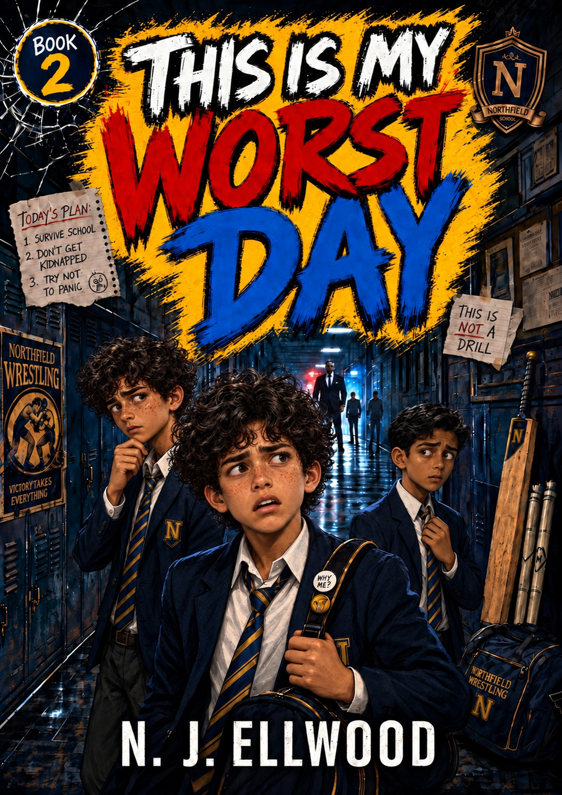
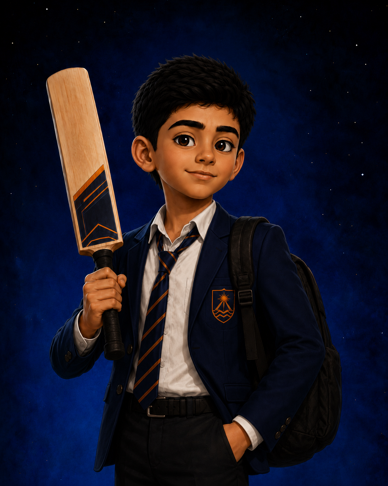

TTWORBYTES PRESENTS

This Is My Worst Day
“The new boy seemed ordinary enough. That was before I noticed the men watching him.”
My name is Jake Morrow. I'm twelve years old.
THE STORY
One New Boy. One Huge Secret. Jake’s Worst Day Yet.
A comic school mystery involving friendship, danger, cricket and a new pupil who is not remotely what he seems.
Jake Morrow thinks the most unusual thing about the new boy is the attention he receives from a group of very serious men.
But Faisal is hiding something, and the closer Jake gets to the truth, the more dangerous an ordinary school day becomes.
Before the day is over, Jake will discover that friendship sometimes means standing beside someone even when you do not fully understand who they are—or what trouble is following them.
AT THE HEART OF THIS STORY
The New Boy Nobody Understands
Faisal appears to be an ordinary new pupil. Jake soon discovers that almost nothing about him is ordinary.

“The new boy with far more secrets than anyone realises.”
Faisal is quiet, intelligent and watched far more closely than any ordinary schoolboy should be. He has arrived at Jake's school carrying a secret that could place everyone around him in danger.
Jake wants to make him feel welcome. Unfortunately, being Jake, he also manages to make the situation considerably more complicated.
Meet the PeopleWHY THIS STORY MATTERS
Standing Beside Someone When It Matters
Jake's first instinct is to be curious about Faisal. But as the mystery surrounding the new boy grows, curiosity turns into something more important: friendship.
Jake does not understand everything about Faisal or the danger that seems to follow him. He does understand that being someone's friend means more than asking questions when things are interesting. It means standing beside them when things become difficult.
This Is My Worst Day is about looking beyond first impressions, giving someone new a chance and discovering that loyalty matters most when walking away would be easier.